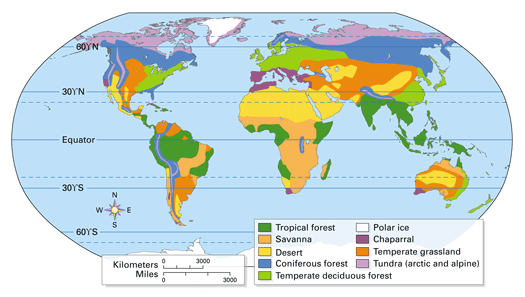
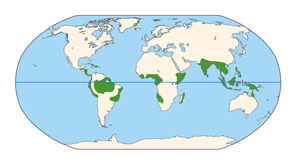
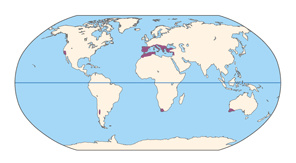
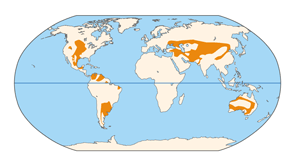
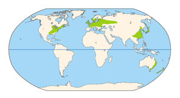
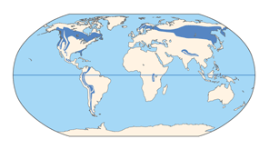

Objectives
- Describe what defines a biome.
- List and describe eight major terrestrial biomes.
Key Terms
Ecologists studying the distribution of Earth's organisms observe that areas with similar climates tend to have similar ecosystems.
What Is a Biome?
The major types of terrestrial ecosystems that cover large regions of Earth are called biomes. Each biome is characterized by communities of plants and other organisms that are adapted to its climate and other abiotic factors. But while the landscapes may appear similar across a biome, the specific organisms vary in different parts of the world. For example, bison and pronghorns graze in North American grasslands, while the grazing mammals in Asian grasslands include saiga (also called "antelope goats") and yaks. The species in both places have similar feeding behavior and other characteristics because they are adapted to similar conditions. Figure 34-9 shows the natural distribution of eight major biomes, plus large areas of ice found near both poles. Notice that there are some latitudinal patterns—certain biomes appear at similar latitudes on several different continents.
|  |
Figure 34-9
Miniature versions of this map will keep you oriented as you read about each biome. |
Tropical Forest
Tropical forests occur near the equator where temperatures are warm year-round (Figure 34-10). One major type of tropical forest, the tropical rain forest, can receive as much as 350 centimeters of rainfall yearly. These ideal growing conditions result in a lush diversity of plants growing in vertical layers. Tall broad-leaved trees form vast over-head canopies more than 30 meters in height (17 times the height of an average adult man). Although light is plentiful at the canopy level, little light reaches the forest floor. The short plants that live there are adapted to the shaded, moist conditions. Many trees are covered with mosses, vines, and other plants such as orchids and bromeliads. These plants grow on other plants rather than on the ground. Many rainforest animals are tree-dwellers as well, including monkeys, birds, snakes, and bats.
Of all biomes, tropical rain forests have the greatest diversity of life, with an estimated 50 percent of all known species on Earth. Rain forests on the island of Madagascar, off the coast of Africa, are home to some 8,000 species of flowering plants, 80 percent of which occur only there. Many of the unique species provide food, medicine, and other valuable products. However, rain forests in Madagascar and many other parts of the world are shrinking. Clearing forests for mining, lumber, and farmland has affected many rainforest species. Losing large areas of forest may also affect global weather patterns, as you'll read in Chapter 36. Governments and researchers are investigating ways to preserve remaining rain forests. Solutions may include different farming methods and the harvesting of nuts, fruits, and other products that do not involve cutting down trees.
|  |
Figure 34-10
Tropical Forests |
Savanna
Found in tropical regions of Africa, Australia, and South America, savannas are grasslands with scattered trees (Figure 34-11). Savanna grasses grow rapidly, providing food for many grazing animals, such as zebras, wildebeest, antelope, and, in Australia, kangaroos, as well as numerous insects. Meat eaters on the African savanna include lions, cheetahs, and hyenas. Also common on savannas are small burrowing animals, including rodents, snakes, worms, and numerous arthropods.
Savannas typically have a warm climate with alternating wet and dry seasons. The dry seasons may include long periods of drought, when no rain falls. Organisms in the savanna must be able to cope with drought. For example, some animals wander until they find greener pastures or scattered watering holes.
Desert
Land areas receiving less than 30 centimeters of rain per year are typically classified as deserts (Figure 34-12). Though you may think of all deserts as very hot places, temperatures vary widely. Some deserts have surface soil temperatures above 60°C during the day and then cool off at night. Other deserts, such as those in central Asia, are relatively cold, especially during winter nights. The driest deserts, such as those in central Australia and Africa, have little or no plant life. Others are populated by scattered shrubs and cacti.
A remarkable array of ways to conserve water have evolved in desert organisms. Saguaro cacti have "pleats" that enable the plants to expand and to store water during wet periods. Many desert animals, such as the kangaroo rat, are small burrowers that are active in the cool evenings. This unusual mammal does not need to drink—it derives water mainly from the seeds it eats.
Chaparral
The chaparral (shap uh RAL) is a temperate coastal biome dominated by dense evergreen shrubs. The climate consists of mild, rainy winters and hot, dry summers. While the largest area of chaparral occurs around the Mediterranean Sea, similar ecosystems are found elsewhere in the world, including California (Figure 34-13).
The chaparral's dry, woody shrubs are frequently ignited by lightning and are adapted to survive periodic brushfires. In fact, some of the plant species produce seeds that will germinate only after a hot fire. Animals of the chaparral include deer, birds, and rodents that feed on the shrubs and their seeds, as well as lizards and snakes.
|  |
Figure 34-13
Chaparral |
Temperate Grassland
The temperate grassland biome is characterized by deep, nutrient-rich soil that supports a variety of grass species and other plants (Figure 34-14). The winters are colder than in the tropical savannas. Seasonal drought, occasional fires, and grazing by large mammals all prevent the growth of woody shrubs and trees. The height of the vegetation in a grassland depends mainly on the amount of yearly rainfall. Drier areas, such as the South Dakota grassland, tend to have shorter grass species, whereas wetter areas, such as eastern Kansas, support grasses and other plants that grow to over 2 meters in height.
Grassland soils contain a great diversity of microorganisms and animals, including worms, arthropods, and burrowing rodents. Above ground, the North American grasslands (also known as prairies) include grazing mammals such as bison and pronghorns, as well as coyotes, snakes, lizards, and insects.
|  |
Figure 34-14
Temperate Grasslands |
Temperate Deciduous Forest
Dense stands of deciduous trees—trees that drop their leaves each year—characterize temperate deciduous forests. These forests occur throughout the temperate zone where there is enough precipitation to support the growth of large trees (Figure 34-15). In this region winters tend to be very cold, while summers can be quite hot. Common deciduous trees such as maples, oaks, beeches, and hickory shed their leaves in autumn, which helps reduce evaporation during the winter when water is not easily replaced from frozen soil.
Though not as rich in species diversity as tropical rain forests, temperate deciduous forests provide habitats for a wide variety of species. Many microorganisms, fungi, and arthropods live in the soil and leaf litter on the forest floor. Mammals found in the temperate deciduous forests of eastern North America include deer, squirrels, chipmunks, foxes, and bears. During the cold winter, many of these animals conserve energy by greatly reducing their activity levels. Some bird species migrate to warmer climates.
|  |
Figure 34-15
Temperate Deciduous Forests |
Coniferous Forest
Towering cone-bearing evergreen trees such as pine, spruce, fir, and hemlock characterize the coniferous forest. The northern regions of the biome, also called the taiga, have long, cold winters with heavy snowfall (Figure 34-16). The conical shape of the trees prevents too much snow from collecting and breaking branches. The needle-like leaf is low in surface area, which limits water loss from evaporation during dry periods. Typical taiga animals include hares, moose, elk, wolves, and bears.
In coastal Oregon, Washington, and British Columbia, Canada, conditions are warmer and wetter than in most other coniferous forest areas. These forests are actually considered temperate rain forests because of the amount of precipitation they receive.
|  |
Figure 34-16
Coniferous Forests |
Tundra
Bitterly cold temperatures and high winds characterize the tundra. Tundra communities are found within the Arctic Circle and on high mountaintops at all latitudes due to the similar conditions there (Figure 34-17). The permanently frozen subsoil, called permafrost, ranges in depth from a few meters to 1,500 meters. During the short summer season, only the top few centimeters of the permafrost melt. Puddles accumulate in the shallow topsoil. Mosses, lichens, and grasses thrive, but large plants are rare since their roots cannot penetrate the permafrost or absorb water and nutrients from it.
During the brief Arctic growing season, clouds of mosquitoes fill the air. Lemmings, caribou, and reindeer eat the tundra ground cover. Some tundra animals, including the arctic hare and snowy owl, turn white in the winter, allowing them to blend in with the snow. During the summer they turn brown, better enabling them to hide in their rock-strewn environment.
Concept Check 34.3
1. What factors determine the type of biome in an area?
2. Compare and contrast tropical rain forests, temperate deciduous forests, and coniferous forests.
3. Give an example of how a desert organism has adapted to the abiotic conditions there.